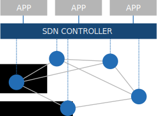
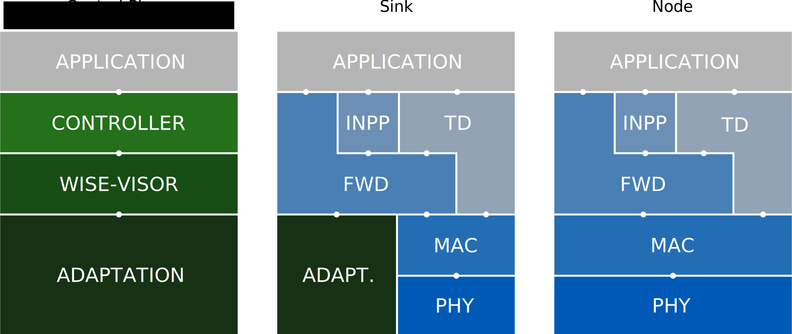
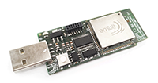

Source Code
Our code is publicly available on GitHub.
The Stateful
Software Defined Networking solution
for Wireless Sensor Networks
The stateful Software Defined Networking solution
for the Internet of Things
SDN-WISE is a Software Defined Networking solution for WIreless SEnsor Networks. The aim of SDN-WISE is to simplify the management of the network, the development of novel applications, and the experimentation of new networking solutions.
 Software Defined Networking (SDN) is envisioned as a way to reduce the complexity of network configuration and management. New network control and management solutions can be easily deployed on existing equipment as simply as it is to install new programs on a computer.
In SDN networks, management operations are centralized and physically separated from forwarding operations. In fact SDN Switches classify and forward packets according to the so called flow rules sent by the SDN Controller(s).
When a switch has no information available to classify an incoming packet, it requests the assistance from one or several controllers which should provide an appropriate rule. The policies applied by controllers, which in the end define the entire network behavior, can be easily and rapidly modified by installing a new Controller software.
SDN-WISE uses this paradigm in wireless infrastructureless networks.
The protocol architecture of SDN-WISE is shown in the following figure.
SDN-WISE is based on IEEE 802.15.4 physical and MAC layers. Network elements can be distinguished into Sinks and Nodes. The difference between Sinks and the Nodes is that the formers are equipped with a network interface connected to an infrastructured network. Therefore, all control packets should find their way towards a Sink to leave the WSN and reach the Controller.
On top of the MAC layer, the Forwarding (FWD) layer handles incoming packets as specified in the WISE Flow Table. The FWD layer updates this table according to the configurations sent by the Control plane.
The In-Network Packet Processing (INPP) layer runs on top of the Forwarding layer and it is responsible for operations like data aggregation or other in-network processing.
If no entry in the WISE Flow Table matches the current packet, a request is sent to the Control plane. In order to contact the Control plane, each node has to know its best next hop towards a Sink. This value is calculated in a distributed way using the Topology Discovery (TD) layer through beaconing.
In the Control Plane, network logics are dictated by one or several Controller(s), and a WISE-Visor. The WISE-Visor abstracts network resources so that different logical networks, with different management policies set by different Controllers, can run over the same set of physical devices.
Between the Sinks and the WISE-Visor there is the Adaptation layer which is responsible for formatting messages received from a Sink in such a way that they can be handled by the WISE-Visor and viceversa.
The behavior of SDN-WISE nodes is completely encoded into three data structures:
| WISE States Array | Accepted IDs Array | WISE Flow Table |
SDN-WISE nodes are characterized by a current state for each active Controller. The WISE States Array is the data structure containing such information.
The Accepted IDs array allows a sensor node to select packets to process. This is useful especially for achieving multicast communication using the broadcast nature of the wireless medium.
Each entry of the WISE Flow Table has a Matching Rules section which specifies the conditions under which the entry applies. If these conditions are satisfied the sensor will perform the action contained in the Action section of the entry.
More details on SDN-WISE can be found here:
| Get Started with SDN-WISE |
| Understanding the SDN-WISE Core |
| Controlling heterogeneous networks using SDN-WISE and ONOS |
| From Reactive to Predictive Flow Instantiation: An Artificial Neural Network Approach to the SD-IoT. European Wireless 2018. May 2018. |
| Wireless Software Defined Networks. International Conference on Information Networking 2018. January 2018. |
| Exploiting State Information to Support QoS in Software-Defined WSNs. MedHocNet 2016. June 2016. |
| Networking issues for the Internet of Things. IEEE SPS Italy Chapter Summer School on Signal Processing (S3P). September 2015. |
| Introduzione a SDN-WISE. May 2015. |
| SDN-WISE: A SDN solution for Wireless Sensor Networks. INFOCOM 2015. April 2015. |
| SDN-WISE: A “wise” choice for Wireless Sensor Networks Management, Experimentation, and Application Development. Proc. of INW 2015. January 2015. |
Our code is publicly available on GitHub.